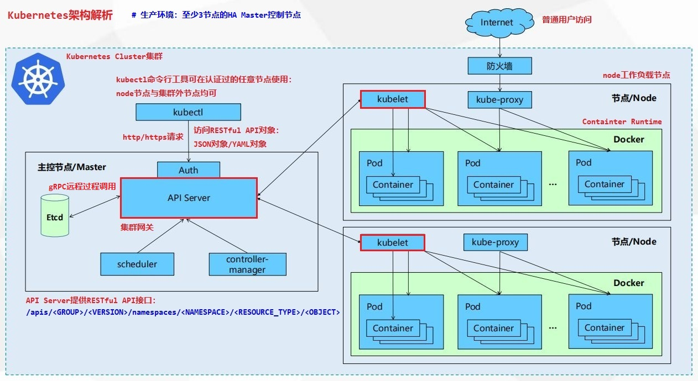
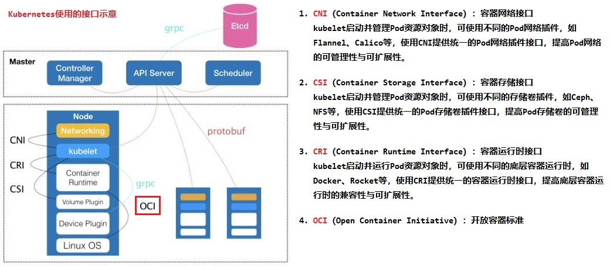
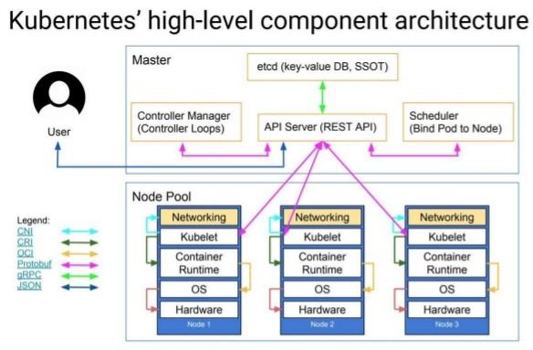
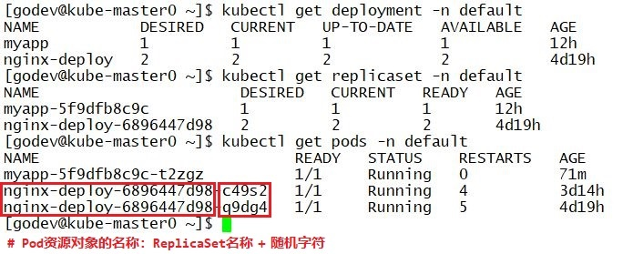
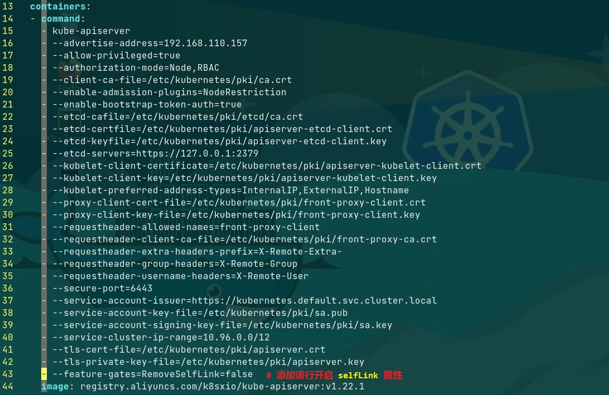
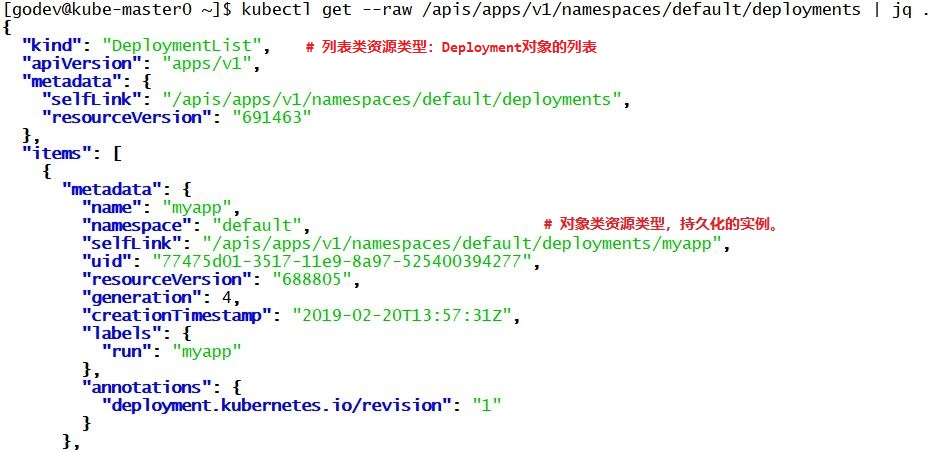

文档说明：
- 该文档使用的 Kubernetes 版本为
1.12.x - 文档所示的命令可能与当前 Kubernetes 版本存在差异，请以实际使用的版本为基准！
文档目录：
- Kubernetes 集群架构概览
- Kubernetes 集群的资源对象管理
- 资源对象操作相关命令
Kubernetes 集群架构概览：
API Server作为 Kubernetes 集群的网关（gateway）etcd键值型数据库作为 Kubernetes 集群的核心数据库- Kubernetes 集群可部署为单 master 集群或多 master（常见为 3 个）的 HA 集群
- 单 master 节点的 Kubernetes 集群架构示意：
 - 多 master 节点的 Kubernetes 集群架构示意：

👉 该示例中将 etcd 集群分别部署于 3 个 master 节点上。
- 单 master 节点的 Kubernetes 集群架构示意：
- Kubernetes 中的接口规范：
CRI：Container Runtime Interface（容器运行时接口）gRPC：Google Remote Process Call（Google 发布的远程过程调用框架）OCI：Open Container Initiative（开放容器标准）CNI：Container Network Interface（容器网络接口）CSI：Container Storage Interface（容器存储接口）- 以上各接口规范在集群中组件之间的调用示意：

- Kubernetes 集群中的网络概述：
- 集群中的通信种类：
- 同一 Pod 资源对象中容器间的通信
- 各 Pod 资源对象彼此间的通信
👉 Pod 间在同一节点上通信或彼此跨节点间通信
- Pod 资源对象与 Service 资源对象间的通信
- 集群外部的流量与 Service 资源对象间的通信
- 集群网络规划部署：
- Kubernetes 集群主机间的网络
- Service 资源对象定义的
ClusterIP网络 - 由不同
CNI定义的 Pod 间的通信网络
- 集群中的通信种类：
- Kubernetes 集群的客户端类型：
- Kubernetes 的 API Server 的客户端：
集群及项目管理人员、开发人员、集群中与 API Server 交互的组件 - Kubernetes 的访问 Pod 的客户端：
集群外的普通用户、命名空间内的 Pod 应用（Pod Client）
- Kubernetes 的 API Server 的客户端：
Kubernetes 集群的资源对象管理：
- kubectl 命令管理资源对象的 3 种方式：
- 陈述式命令：使用命令行选项管理
- 陈述式资源配置文件：使用
kubectl create命令创建 - 声明式资源配置文件：使用
kubectl apply命令创建
- Kubernetes 使用
Deployment资源对象（Pod 控制器）部署与管理前端无状态（Stateless）的 Pod 资源对象，而 Deployment 资源对象并不直接作用于 Pod 资源对象，而是使用ReplicaSet资源对象进行部署与管理。 - Deployment 资源对象是 ReplicaSet 资源对象之上的 Pod 控制器，两者都为工作负载型（workload）资源对象。
- 使用 Deployment 资源对象部署的 Pod 资源对象都具有
run=<pod_controller_name>的标签（label）。 - Pod 资源对象的名称：
<replicaset_name>-<random_char>
 - Pod资源对象的状态：
Pending、Running、Succeeded、Failed、Unknown - Pod 容器日志信息管理：
- 🐳 Kubernetes 集群中 Pod 容器日志信息默认以标准错误（
standard error）输出至控制台，可使用 kubectl logs 命令查看容器日志信息。 - 必须使用集中式的日志收集系统管理 Pod 容器日志。
- 使用 kubectl logs 命令只能查看存在的 Pod 资源对象中的容器日志，不能查看已删除的Pod 资源对象日志。
- 🐳 Kubernetes 集群中 Pod 容器日志信息默认以标准错误（
Kubernetes 的
API资源概述：- API Server 提供基于
RESTful风格架构的编程接口，接收基于HTTP/HTTPS的客户端组件请求，并将其处理返回。 - Kubernetes 的其他组件被抽象为标准的 REST 资源，可以使用标准的
JSON序列化数据对 其管理与控制。 - API 资源类型包括：
- 对象类（Object）
- 列表类（List）
- 简单类（Simple）
- Kubernetes 中的 API 资源类型绝大多数以对象的方式存在，对象是资源运行时生成的实例，且为持久化的实体。
- API 对应于资源类型的
URI，即资源类型的YAML配置文件中的selfLink字段，其状态存储于后端 etcd 数据库中。💥 Kubernetes v1.20 版本开始，默认删除了
metadata.selfLink字段，然而，部分应用仍然依赖于该字段，如nfs-client-provisioner。如果仍然要继续使用这些应用，需要重新启用该字段。 - 🚀 若集群使用
kubeadm组件部署，可修改控制平面（control plan）各节点的/etc/kubernetes/manifests/kube-apiserver.yaml文件，在其中添加--feature-gates=RemoveSelfLink=false选项以启用该字段，如下所示：
- 关于 selfLink 的说明可参考 该链接
- 关于 kube-apiserver 命令的选项可参考 kube-apiserver 官方文档
- Kubernetes 将 API 进行逻辑分组，称为 API 群组（API group）。
- 🚀 Kubernetes 的 API Server 支持相同的 API 群组中使用不同的版本，因此能在不同的版本中使用同名的资源类型，从而在稳定版本与新的实验版本中能以不同的特性使用同名的资源类型。
关于 API 群组的分类与详细信息可参考 该链接
Kubernetes 的 API 层级结构：
- 核心 API 群组（core group）：
- REST 路径：
/api/v1 - 资源配置文件中的字段：
apiVersion: v1
- REST 路径：
- 命名的 API 群组（named group）：
- REST 路径：
/apis/<group_name>/<version> - 资源配置文件中的字段：
apiVersion: <group_name>/<version>
- REST 路径：
- 命名空间级别的 REST API：
- REST 路径：
/apis/<group_name>/<version>/namespaces/<namespace>/<resource_kind>/<object_name> - 示例：
/apis/apps/v1/namespaces/default/deployments/nginx-deploy
- REST 路径：
访问 Kubernetes RESTful API 的方法：
- kubectl get 命令行方式：
 kubectl proxy 命令行方式：
1
2$ kubectl proxy --port=<port>
# 启动本地主机为代理网关，使其能够访问 API Server 的 REST API，该端口不可被占用。kubectl proxy 方式使用 kubectl 打开本地
unix socket，使 curl 命令通过进程间通信（IPC）的方式与代理网关通信，实现与 API Server 的交互。- Kubernetes 集群默认使用
HTTPS的方式访问 API Server 的 REST API。 - 使用 kubectl proxy 命令启动本地主机为代理网关后，在另一终端中即可使用 curl 命令以 HTTP 的方式访问，如下所示：
1
$ curl -s http://localhost:8080/api/v1/namespaces/default
- kubectl get 命令行方式：
- 核心 API 群组（core group）：
- API Server 提供基于
Kubernetes 的 API 资源分类：
- 工作负载类型（workload）：
- ReplicationController（rc）
- ReplicaSet
- Deployment
StatefulSet- DaemonSet
- Job
- 服务发现与负载均衡（Discovery & LB）：
- Service
Ingress
- 配置与存储（Config & Storage）：
- Secret
ConfigMap- PersistentVolumeClaim（pvc）
- 集群（Cluster）：
- Namespace
- Node
- Role、ClusterRole、ClusterRoleBinding、RoleBinding
- PersistentVolume（pv）
- 元数据（Metadata）：
HorizontalPodAutoscaler（HPA）- LimitRange
- 工作负载类型（workload）：
- Kubernetes 资源配置清单基础：
- Kubernetes 资源配置清单的主要一级字段：
apiVersion、kind、metadata、spec、status - 其中 metadata、spec 与 status 为嵌套字段：
metadata：记录资源的元数据数据spec：记录资源的用户期望状态（desired）信息，由用户自定义并维护。status：- 记录活动对象的当前状态（实际状态），由 Kubernetes 自动填充并维护，对用户为只读字段。
👉 活动对象是指由 Kubernetes 创建的资源对象。
- 该字段记录的活动对象的状态应与 spec 字段的状态相同，或者两者无限接近。
- 记录活动对象的当前状态（实际状态），由 Kubernetes 自动填充并维护，对用户为只读字段。
- 💥 Kubernetes 的 API Server 只能接收并响应
JSON对象，YAML 格式的对象需经过 API Server 转换后才能被接收处理。
- Kubernetes 资源配置清单的主要一级字段：
- Kubernetes 资源管理方式：
- Kubernetes 的 API Server 支持声明式编程（
delarative programming）与陈述式编程（impreative programming）。 - 推荐优先使用
apply或patch命令的声明式对象配置。 - 可将不同资源类型的对象配置信息写在同一个资源配置清单中，并使用
---符号将每个资源对象配置信息进行资源分割。 - 使用
Git版本控制系统管理资源配置清单文件。
- Kubernetes 的 API Server 支持声明式编程（
- 命名空间的资源管理：
- 命名空间（namespace）通过将不同资源进行隔离，使命名空间的资源被不同的用户、租户与项目使用。
- 命名空间只隔离不同的资源，不隔离跨命名空间的 Pod 间的通信，因此单纯使用命名空间的隔离机制为软隔离，而对网络流量的隔离需要由网络策略（
network policy）来实现。✅ 不同的 CNI 插件可提供不同的网络策略功能，如 Calico、OVS plugin 等。
- 创建自定义的命名空间，如下所示：
1
$ kubectl create namespace <namespace_name>
资源对象操作相关命令：
API 版本与资源对象解释命令：
1
2
3
4
5
6
7
8
9
10
11
12
13
14
15$ kubectl --help
# 查看 kubectl 命令的使用方法
$ kubectl api-versions
# 查看 API Server 支持的 API 版本，并以 group/version 的格式返回。
$ kubectl api-resources
# 查看 API Server 支持的 API 资源类型
$ kubectl explain <resource_type>
# 查看 API 资源类型的解释信息
### 示例 ###
$ kubectl explain pods.spec.containers.imagePullPolicy
# 查看 Pod 资源对象相关配置字段的详细信息创建
Deployment资源对象并运行 Pod：1
2
3
4
5
6
7
8
9
10
11
12
13
14
15
16
17
18
19
20
21
22
23
24
25
26
27
28
29$ kubectl run <deployment_name> \
--image=<image_name>:<tag> --replicas=<number> --port=<port> \
-n <namespace>
# 陈述式命令创建 Deployment 资源对象
# 一般情况下，不直接创建 Pod 资源对象，而是通过 Pod 控制器创建并管理 Pod 对象。
# kubectl run 常用命令选项：kubectl run --help
# --image='' Pod 资源对象中容器镜像的名称
# --port='' Pod 资源对象中容器的端口号
# --replicas='' Pod 资源对象的副本数
# --record=[false|true] 将当前的 kubectl 命令记录于资源对象的
# annotation 注释中
# --save-config=[false|true] 将当前的资源对象配置信息记录于 annotation
# 注释中，默认为 false，在使用 kubectl apply
# 时有用。
# --restart=[Always|OnFailure|Never]
# Pod 资源对象的重启策略，默认为 Always。
# --dry-run=[false|true] 测试运行（干运行），默认为 false。
# -n，--namespace='' 资源对象所在的命名空间
### 示例 ###
$ kubectl run nginx-deploy \
--image=nginx:v1.12 --replicas=2 --port=80 -n default
# 创建 Deployment 资源对象 nginx-deploy
$ kubectl run client \
--image=busybox:latest --restart=Never --replicas=1 \
-it -n default -- /bin/sh
# 指定 --restart=Never 选项时，只创建 Pod 资源对象 client 并进入 Pod 交互式界面。
# 退出交互式界面后，终止 Pod 资源对象运行，并进入 Completed 状态。创建 Service 资源对象与暴露应用端口：
1
2
3
4
5
6
7
8
9
10
11
12
13
14$ kubectl expose deployment <deployment_name> \
--name=<service_name> --port=<port> --target-port=<port_num> \
-n <namespace>
# 创建 Service 资源对象，对外暴露并关联 Pod 资源对象的 Pod IP 与端口。
# kubectl expose 常用命令选项：kubectl expose --help
# --name='' 创建的 Service 资源对象名称
# --port='' Service 资源对象的端口号
# --target-port='' Service 资源对象关联的后端 Pod 资源对象的端口号
# -n，--namespace='' 资源对象所在的命名空间
### 示例 ###
$ kubectl expose deployment nginx-deploy \
--name=nginx-svc --port=8080 --target-port=80 -n default
# 创建名称为 nginx-svc 的 Service 资源对象查看与操作相关资源对象：
1
2
3
4
5
6
7
8
9
10
11
12
13
14
15
16
17
18
19
20
21
22
23
24
25
26
27
28
29
30
31
32
33
34
35
36
37
38
39
40
41
42
43
44
45
46
47
48
49
50
51
52
53$ kubectl get pods,services -n <namespace> -o wide
# 查看命名空间中 Pod 与 Service 资源对象的详细信息（逗号分隔）
$ kubectl get <resource_type> \
-n <namespace> -o {yaml|json|jsonpath|wide|custom-columns=...}
# 查看命名空间中的资源对象信息，并以 YAML、JSON、完整格式或自定义格式输出。
### 示例 ###
$ kubectl get pods \
-o custom-columns=NAME:metadata.name,STATUS:status.phase
-n kube-system
# 查看 kube-system 命名空间中 Pod 资源对象的名称与状态信息，以自定义格式输出。
$ kubectl logs <pod_name> [-c <container_name>] -n <namespace>
# 查看命名空间中 Pod 资源对象中的容器日志信息
# Pod 资源对象中存在多个容器时，使用 -c 选项指定容器。
$ kubectl exec <pod_name> \
[-c <container_name>] -n <namespace> -- <command> <opts> <args...>
# 执行命名空间中 Pod 资源对象中的命令
# Pod 资源对象中存在多个容器时，使用 -c 选项指定容器。
$ kubectl delete \
<resource_type> <resource_name> -l <key>=<value> -n <namespace>
# 删除命名空间中具有指定标签的资源对象
### 示例 ###
$ kubectl delete deployment myapp --cascade=false -n default
# 删除 default 命名空间中名为 myapp 的 Deployment 资源对象，但不删除其创建的 Pod。
$ kubectl create -f <file>.yaml|<dir>|<url>
# 使用陈述式命令 create 创建不同的 API 资源对象
$ kubectl apply -f <file>.yaml|<dir>|<url>
# 使用声明式命令 apply 创建、更新与替换不同的 API 资源对象
# 注意：
# 1. 声明式对象配置管理具有高级的补丁更新机制，将相应的配置信息记录于 annotation 注释中。
# 2. Kubernetes 建议使用声明式对象配置方式！
$ kubectl delete -f <file>.yaml
# 删除该 YAML 配置文件创建的 API 资源对象
$ kubectl scale deployment <deployment_name> --replicas=<number> -n <namespace>
# 指定命名空间中扩容或缩容 Pod 资源对象的副本数目
### 示例 ###
$ kubectl scale deployment myapp --replicas=3 -n default
# 指定 default 命名空间中扩容或缩容 Pod 资源对象的副本数目为 3 个
# 注意：
# 扩容或缩容 Pod 资源对象副本数目的方法：
# 1. 通过该命令行方式进行扩容或缩容
# 2. 使用如下命令更改 Deployment 资源对象的配置信息，更改后实时生效：
# $ kubectl edit deployment myapp -n default